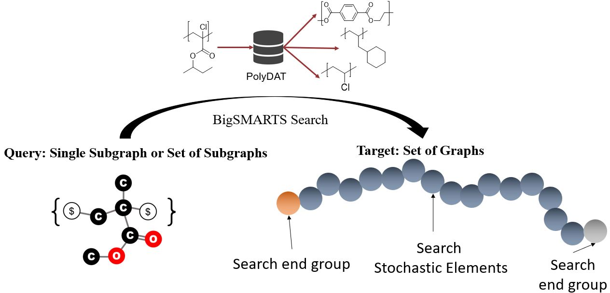
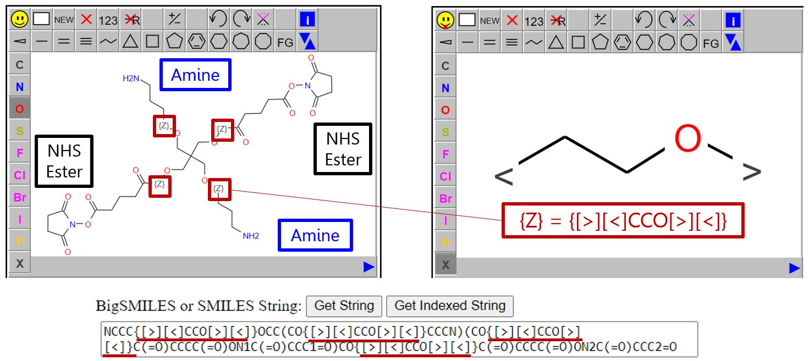
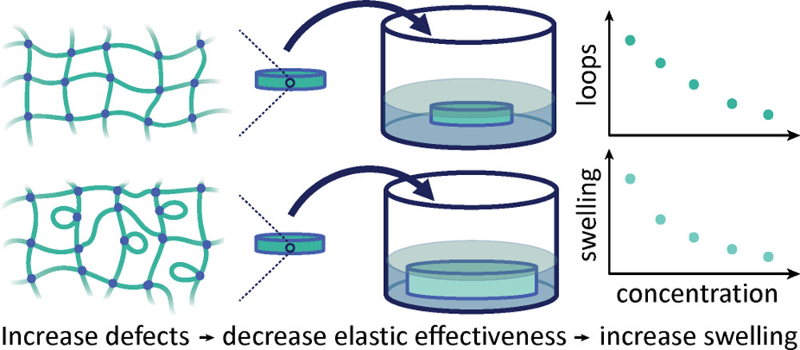
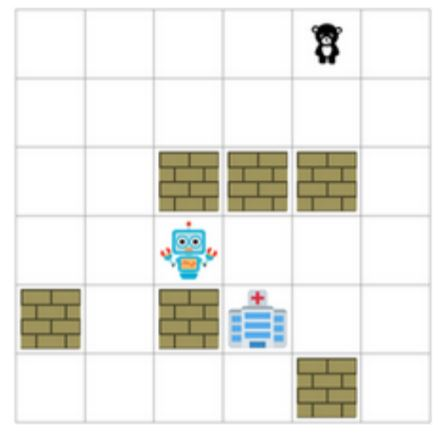

Welcome
I am a 5th year Ph.D. student in MIT Chemical Engineering advised by Dr. Bradley D. Olsen.
My research combines artificial intelligence and machine learning with materials science (MIT's 2019 6.S191 Award Winner).
My broad interests:
search algorithms
polymer property prediction
polymer data models
Visit CRIPT, a company that I co-founded that uses a data-centric infrastructure for findable, accessible, interoperable, and reusable (FAIR) data for a wide variety of stakeholders, including polymer scientists/engineers and data scientists in academia, industry, and government.
My Ph.D. focus is on:
creating theory-guided AI tools to accelerate polymer design
Research Projects
Data-driven research, reaction design, and small-molecule property design are rapidly advancing due to the availability of open source toolkits like RDKit that enable search of deterministic small molecule graphs encoded in SMILES (Simplified Molecular-Input Line-Entry System) using the subgraph search syntax SMARTS (SMILES Arbitrary Target Specification). BigSMILES has extended SMILES to represent polymers as ensembles of molecular graphs, motivating a parallel extension of SMARTS to the macromolecular domain. This project focuses on the significant expansion and rich complexity of searching polymers through the new search syntax BigSMARTS. BigSMARTS queries the elements of a molecular graph set containing one or more elements of a subgraph set and includes searches within the polymer’s building blocks (repeat units and end groups). BigSMARTS enables polymer reactions to be encoded and searched and coarse-graining searches to classify chain topologies (star polymers and block copolymers) that influence properties. With the development of new search tools based on RDKit to support BigSMARTS, polymer informatics will enjoy the benefits of search that have advanced small molecule design in the era of artificial intelligence.

I am developing a software that allows a user to engineer complex polydisperse polymer network structures below full conversion via the first ever molecular editor for stochastic graphs shown below and predict two important performance metrics:
- Shear Elastic Modulus
- Fracture (Tearing Energy)

This tool will apply over 140,000 small molecule templates from the US Patent Office to predict reactions of the user's monomers, run quantum calculations to coarse grain these monomers, simulate the formation of the network and its precise defective topology according to experimentally-validated theory, and leverage advanced approximations of published theories to predict the mechanical properties of the simulated material.

Please check out my paper at this link!
Publications & Conferences
Random Forest Predictor for Diblock Copolymer Phase Behavior
Akash Arora, Tzyy-Shyang Lin, Nathan J. Rebello, Sarah H. M. Av-Ron, Hidenobu Mochigase, and Bradley D. Olsen
ACS Macro Letters 2021
(PDF)
(HTML)
Adding the Effect of Topological Defects to the Flory−Rehner and Bray−Merrill Swelling Theories
Nathan J. Rebello, Haley K. Beech, and Bradley D. Olsen
ACS Macro Letters 2021
(PDF)
(HTML)
PolyDAT: A Generic Data Schema for Polymer Characterization.
Tzyy-Shyang Lin, Nathan J. Rebello, Haley K. Beech, Zi Wang, Bassil El-Zaatari, David J. Lundberg,
Jeremiah A. Johnson, Julia A. Kalow, Stephen L. Craig, and Bradley D. Olsen
Journal of Chemical Information and Modeling 2021
(PDF)
(HTML)
Influence of Counterion Structure on Conductivity of Polymerized Ionic Liquids.
Jordan R. Keith, Nathan J. Rebello, Benjamin J. Cowen, and Venkat Ganesan
ACS Macro Letters 2019
(PDF)
(HTML)
Influence of Counterion Chemical Structure on Ionic Conductivity in Polymerized Ionic Liquids
Nathan Rebello
Honors Thesis 2018
(PDF)
(HTML)
Effect of Grafting Density of Random Copolymer Brushes on Perpendicular Alignment in PS-b-PMMA Thin Films.
Wooseop Lee, Sungmin Park, Yeongsik Kim, Vaidyanathan Sethuraman, Nathan Rebello,
Venkat Ganesan, and Du Yeol Ryu
Macromolecules 2017
(PDF)
(HTML)
Influence of topographically patterned angled guidelines on directed self-assembly of block copolymers.
Nathan Rebello, Vaidyanathan Sethuraman, Gregory Blachut, Christopher J. Ellison, C. Grant Willson, and Venkat Ganesan
Physical Review E 2017
(PDF)
(HTML)
A Multiscale Pipeline for Polymer Network Design and Mechanical Property Prediction with Reaction Detection
Nathan Rebello, Tzyy-Shyang Lin, and Bradley Olsen
AIChE National Meeting 2021
(Abstract)
Multiscale Modeling and Characterization of Radical-Initiated Modification of Molten Polyolefins
Weizhong Zou, Amber Tupper, Nathan Rebello, Duminda Ranasinghe, William Green, Bradley Olsen, and Christopher Couch
AIChE National Meeting 2021
(Abstract)
A Stochastic Chemical Search Grammar for Macromolecules
Nathan Rebello, Tzyy-Shyang Lin, and Bradley Olsen
AIChE National Meeting 2021
(Abstract)
Updating Classical Polymer Network Swelling Theory with Loop Defects
Haley Beech, Nathan Rebello, and Bradley Olsen
AIChE National Meeting 2021
(Abstract)
A Hierarchical Model for Polymer Data
Tzyy-Shyang Lin, Dylan Walsh, Nathan Rebello, Kenneth Kroenlein, Debra Audus, and Bradley Olsen
APS March Meeting 2021
(Abstract)
BigSMARTS: A Structurally-Based Line Notation for Macromolecule Search, Classification, and Reactions
Nathan Rebello, Tzyy-Shyang Lin, and Bradley Olsen
APS March Meeting 2021
(Abstract)
Updating classical swelling theory with loops: experiments and real elastic swelling theory
Haley Beech, Nathan Rebello, and Bradley Olsen
APS March Meeting 2021
(Abstract)
Prediction of Block Copolymer Phase Behavior Using Machine Learning
Nathan Rebello, Akash Arora, Tzyy-Shyang Lin, Sarah Av-Ron, and Bradley Olsen
APS March Meeting 2021
(Abstract)
Predicting the flow of polymers under melt processing: from reaction kinetics to viscoelasticity
Weizhong Zou, Amber Tupper, Nathan Rebello, Duminda Ranasinghe, William Green, Bradley Olsen, and Christopher Couch
APS March Meeting 2021
(Abstract)
Introducing CRIPT and Demo
Dylan Walsh and Nathan Rebello
Virtual Symposium on Polymer Data 2021
(Link)
From quantum mechanics to viscoelasticity: A multiscale modeling and characterization of radical initiated modification of polyolefin in molten state
Weizhong Zou, Amber Tupper, Nathan Rebello, Wontae Joo, Duminda S. Ranasinghe, Tzyy-Shyang Lin, Gending Ji,
Sarah Khanniche, Bradley Olsen, William H. Green, Krish Gopalan, and Christopher Couch
APS March Meeting 2020
(Abstract)
Unveiling the effects of molecular topology on the viscoelasticity of entangled polymers under gelation.
Weizhong Zou, Alexandra Sourakov, Nathan Rebello, Tzyy-Shyang Lin, Bradley Olsen, and Jeremiah Johnson
APS March Meeting 2020
(Abstract)
Perpendicular Orientation of PS-b-PMMA Microdomains Controlled by the Grafting Density of P(S-r-MMA) Brushes.
Wooseop Lee, Sungmin Park, Vaidyanathan Sethuraman, Nathan Rebello, Venkat Ganesan, and Du Yeol Ryu
APS March Meeting 2020
(Abstract)
Parametric Conditions for the Directed Self Assembly of Block Copolymers using a Topographically Patterned Angled Substrate and Grafted Brush
Nathan Rebello, Vaidyanathan Sethuraman, Gregory Blachut, Christopher J. Ellison, C. Grant Willson, and Venkat Ganesan
APS March Meeting 2017
(Abstract)
Class Projects
Developed random forest model trained on radiology report text from the MIMIC-IV and MIMIC-CXR datasets to predict the hospital readmissions within 30 days due to congestive heart failure, with AUC scores reaching as high as 0.70, which is comparable to published models in the field.

I developed action-planning models to control autonomous intelligent agents in various “Search and Rescue” domains. A robot (partially) observes its environment, collects information and rewards, and learns the optimal path to the goal with actions to pick up people, deliver them to the hospital, and avoid obstacles like walls and fires. Approaches are evaluated by metrics including the success rate (% of time to reach the goal state), time to produce actions, and node expansions. Key techniques implemented include the famous A* with relaxation heuristics, PDDLs, belief states, planning and acting with partial observability via logical inference, constraint satisfaction problems, and POMDPs.
I developed and trained simple machine learning models, including deep and recurrent neural networks, CNNs, Markov Decision processes, and reinforcement learning with agent-environment interaction. Key concepts include over-fitting, classification, recommender problems, and regularization.
Scoliosis is an abnormal lateral curvature of the spine that can start before the age of 15 and has prohibitive surgical and checkup costs. Inspired that the early detection of scoliosis can improve posture and lower these costs, I proposed an idea with a team that uses convolutional neural networks to analyze checkup X-ray images aggregated over time (initially with a slight curvature of the spine), detect features taken in early X-rays that are indicative that the condition will worsen, and classify the severity at time t. Though there are several implementation challenges of acquiring X-ray records for training, I presented this idea to sponsors from Nvidia and was awarded a $1,000 GPU for the practicality of the idea.
Mentors & Collaborators
Ph.D. Advisor
MIT
Undergrad Advisor
UT Austin